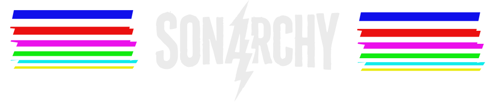
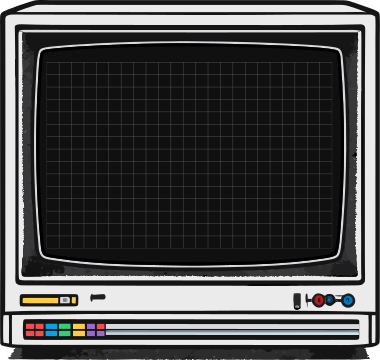
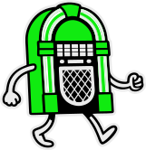

01
/ gather /
One screen. Many phones.
Cast Sonarchy to a TV or laptop — that's the speaker. Everyone else joins on their phone. 2–8 players, no installs, no logins.


Playlist clash
Party bash
Grab
your crew
Pick a category
Take turns choosing the theme
Road trip anthems · One hit wonders
Find your track
Search and lock in your song
Skip or keep
Watch, listen & vote
Best taste wins
Vote. Rank. Reign.
The music category party game
where one speaker meets many controllers.
Cast Sonarchy to a TV or laptop — that's the speaker. Everyone else joins on their phone. 2–8 players, no installs, no logins.
"A song you'd play at a funeral." "Best driving song." Hunt YouTube on your phone and submit the pick that nails it.
The room hears each pick back-to-back and votes anonymously. Highest score after the final round takes the crown.
Scrappy underdog. Cassette tape. Starts the trouble.
Retro veteran. Walkman. Knows every B-side ever recorded.
Snobby purist. Vinyl record. Spins in circles when excited.

Loud and proud. Boombox. Eight D-batteries in the back.
Hype machine. Microphone. MC, announcer, chaos engine.
Identity classified.
/ one more to meet. stay tuned /